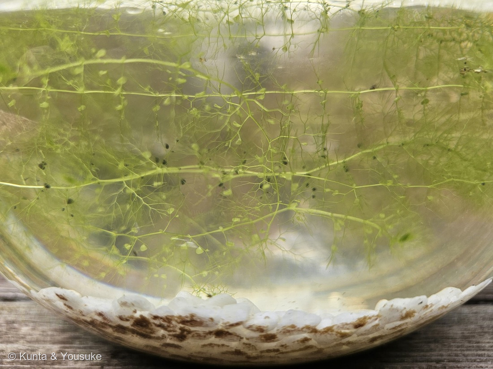
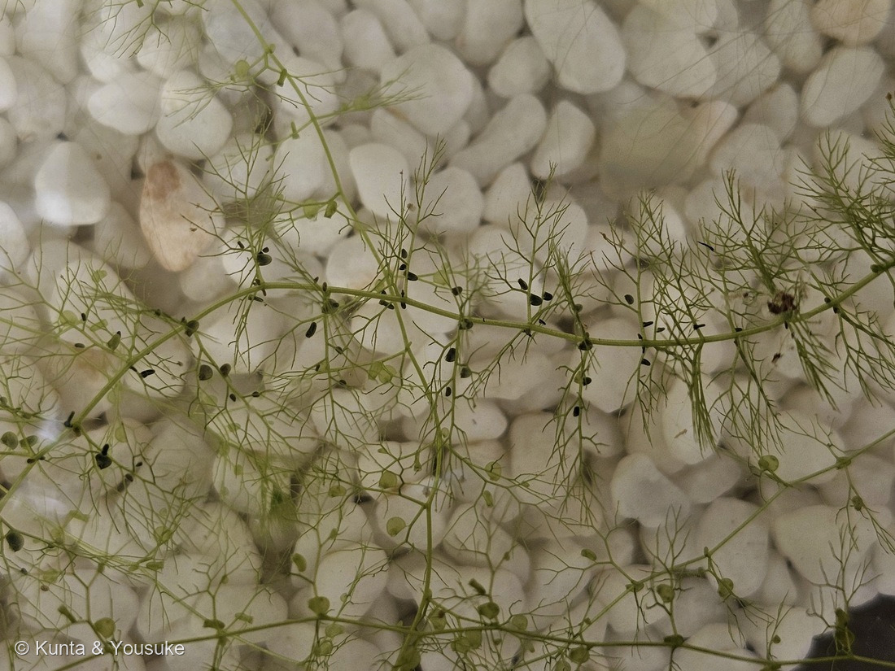
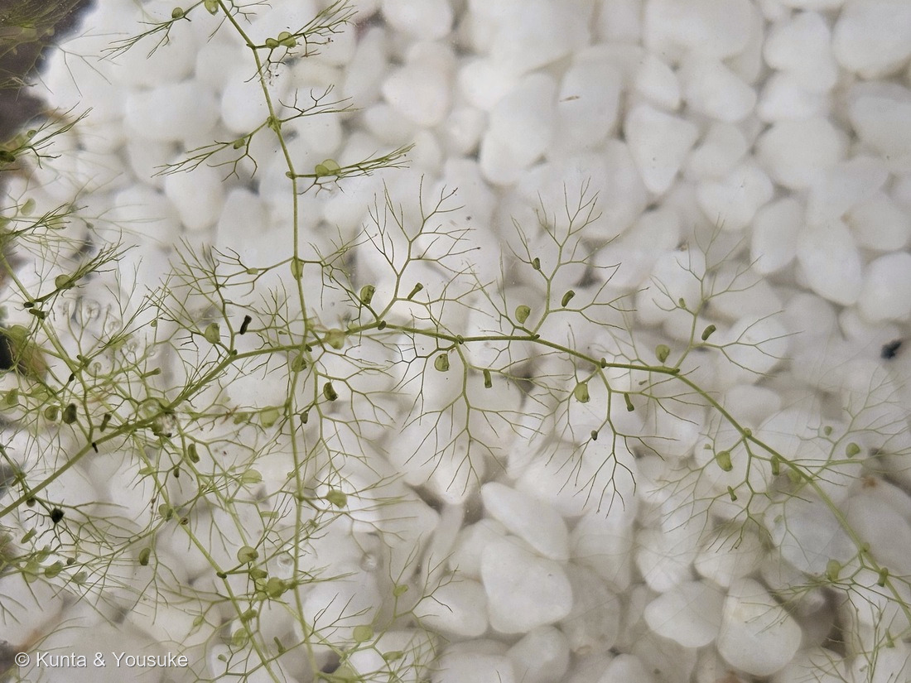
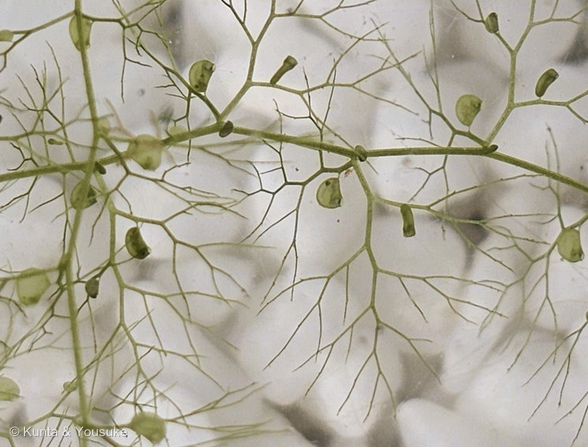

地図を読み込んでいるよ…
🔍 写真も地図も、押しているあいだ拡大して見られるよ（スマホは指を置いてすこし待ってね）。
🌍 の地図＝この子がもともと自生している場所を緑に。北海道から琉球まで（日本全国）、ユーラシア、アフリカ、オセアニア。ため池や湖沼に浮かぶ在来種。
⭐日本にもともといる子（在来種）だよ。環境省レッドリストは「国内では北海道〜琉球に、国外ではユーラシア、アフリカ、オセアニアに分布する」とし、英語版Wikipediaは「found throughout Europe, in tropical and temperate Asia including China and Japan in the east, Central and Southern Africa, Australia and the North Island of New Zealand」とする。⚠とても広い分布だけれど、国ごとの線引きまで書いた出典には当たれていないので、ここはぼくの塗り分けだよ。⚠⚠そして、この緑は「どこにでもいる」という意味ではまったくない――いるのはため池や湖沼の水の中だけで、日本では環境省の準絶滅危惧（NT）。⭐減った理由は「水質汚濁による生育条件の悪化」（環境省レッドリスト）＝⭐⭐水がにごると消えてしまう子なんだ。
⚠ 地図は国（日本と中国だけ県・省）までしか塗れないから、ほんとうの分布より広く見えていることがあるよ。地図はだいたいの場所。正確なところは、上の文を見てね。
イヌタヌキモ（犬狸藻）
Utricularia australis R.Br.
別名 英名 southern bladderwort 原産 北海道〜琉球、ユーラシア、アフリカ、オセアニア ── ⚠環境省レッドリストの準絶滅危惧（NT）
タヌキモ科 · Lentibulariaceae（タヌキモ属 Utricularia・シソ目 Lamiales）── ⭐図鑑で2人目のタヌキモ科（222 ムシトリスミレに続く）／⭐⭐タヌキモ属ははじめて／⭐⭐⭐5人目の食虫植物（科は増えないので95科のまま）
燻太さんの一言「九十九島動植物園 森きららは植物園でもあるから、名札の提示もしているみたい。規模は広島市植物公園よりも小さいけど、新しい子はいっぱいいたよ。水中の捕虫袋が特徴的だね」── ⭐⭐その袋、植物の動きでいちばん速い部類なんだ
⭐⭐⭐⭐⭐ 水中の捕虫袋 ── 植物界で、いちばん速い罠
⭐⭐ 燻太さんの言葉＝「水中の捕虫袋が特徴的だね」。——⭐そのとおりで、しかもこの袋、植物の動きとして知られているなかで、いちばん速い部類なんだ。
- ⭐⭐まず、しくみ。——「捕虫嚢内部は絶えず水が排出され、外部環境より水圧が小さい状態が保たれている」（日本語版Wikipedia・タヌキモ属）＝⭐袋の中の水をポンプで汲み出して、へこませたまま待っている。
- ⭐袋の口には扉があって、そのまわりに毛がある。——「毛状の構造は感覚器官ではないが、何かに触れられた際の振動などで、ぴったりと閉じられていた扉に隙間を生じさせ」（同）＝⭐すき間ができたとたん、へこんでいた袋が水を吸いこむ。⭐獲物は水ごと中へ。
- ⭐⭐⭐⭐その速さ＝「Capture lasts only half a millisecond, and animals are sucked into the trap with an acceleration of 600 g」（AoB PLANTS「Fastest predators in the plant kingdom」）＝⭐捕まえるのにかかる時間は1000分の0.5秒、吸いこむ加速度は600G。
- ⭐⭐⭐⭐⭐そして、ここが図鑑の中でつながるところ。——同じ論文が「In respect to trap movement duration, Utricularia is by far the fastest carnivorous plant」と書き、⭐142 ハエトリソウのはさみ罠は「takes ~100 ms」だと続けている。⭐⭐⭐つまり0.5ミリ秒 対 約100ミリ秒＝けたがふたつちがう。⚠この研究を紹介した記事は「more than 100 times faster than a Venus flytrap」と書いている（ScienceDaily・2011年）。⭐ぼくらが「パチン」と見ているあの動きより、はるかに速いんだ。
- ⭐⭐獲物は＝「Tardigrada, Nematoda, Gastropoda, Acaridae, Rotifera, Ciliata and Crustaceae（especially Cladocera, Copepoda and Ostracoda）」（同）＝クマムシ、センチュウ、小さな巻貝、ダニ、ワムシ、繊毛虫、そしてミジンコ・ケンミジンコ・カイミジンコ。
- ⭐⭐⭐⭐しかも、この種そのものの記録がある。——「Merl (1922) observed 13 prey capture events within 3 days in a trap of U. australis」（同）＝⭐イヌタヌキモのひとつの袋が、3日のあいだに13回も獲物を捕らえたのを観察した、という記録だよ。⭐袋は、一度きりの罠じゃないんだ。
- 袋の大きさは「typically between 0.5 and 6 mm in diameter」（同）／日本語版Wikipediaは水生種で「通常0.2-6.0mm、最大1.2cm」。⭐⭐写真④の、ひとつひとつの粒がそれだよ。
- ⭐⭐写真②と④をくらべてみて。——②の袋は黒っぽく、④の袋は透きとおった緑。⚠黒いのは中に獲物や分解されたものがたまっているからだと思うけれど、そう書いた出典には当たれなかった（ぼくの読み）。⏳だから宿題にした＝⭐顕微鏡でのぞく。
⭐⭐⭐⭐ 名前に、動物が二匹入っている
- ⭐⭐「タヌキ」のほう＝「葉の様子がタヌキの尾に似ていることからの命名のようです」（但馬情報特急）／日本語版Wikipediaも「水生の種の茎葉をタヌキの尾に見立てて名づけられた」。⭐写真①の、水中でふさふさ広がっている感じ、たしかに尻尾みたいだね。
- ⭐⭐「イヌ」のほう＝「タヌキモという植物があって、その植物によく似ているが本物じゃないということでイヌがついているようです」（但馬情報特急）。
- ⭐⭐⭐図鑑の「イヌ」なかまが、これで5人目＝079 イヌホオズキ／100 シロイヌナズナ／154 オオイヌノフグリ／231 イヌマキ／⭐そしてこの子。⭐⭐しかも231 イヌマキとまったく同じ形＝「本物（コウヤマキ／タヌキモ）」がいて、その劣るほうとして名づけられた。
- ⭐属名 Utricularia は「ラテン語の utriculus（小さい袋、革袋、卵形嚢などの意）に由来」（日本語版Wikipedia・タヌキモ属）＝⭐まさに、あの捕虫嚢のこと。
- ⭐⭐⭐種小名 australis は「南の」。⚠日本にいるのに「南」？——「The specific epithet 'australis' is Latin for 'southern' and reflects the fact that the discovery of this species was made in Australia in 1810」（英語版Wikipedia）＝⭐オーストラリアで最初に見つかったから。⭐⭐日本からヨーロッパ、アフリカ、オセアニアまで広くいる子なのに、名前は「見つかった場所」で決まってしまったんだね。
- ⭐⭐⭐⭐まとめると、この子の名前はぜんぶ「よそ」を向いている＝和名は「タヌキ」と「イヌ」という動物、学名は「袋」と「南半球」。⚠この子自身のことを言っているのは、じつは Utricularia（袋）だけなんだ。
⭐⭐⭐⭐⭐ 「本物じゃない」と呼ばれた子が、じつは「本物」の親だった
⭐⭐⭐ これは、調べていていちばん驚いたこと。
- ⚠⚠環境省レッドリストの「タヌキモ」のページを開くと、学名が Utricularia × japonica と、雑種のしるし（×）つきで書いてある。
- ⭐⭐⭐そして、こう説明されている＝「イヌタヌキモとオオタヌキモの自然雑種」（環境省レッドリスト）。
- ⭐⭐⭐⭐⭐つまり ──「本物じゃない」と言われて「イヌ」をつけられたこの子のほうがれっきとした一つの種で、「本物」と呼ばれたタヌキモのほうが二種のあいだに生まれた雑種。⭐⭐しかもイヌタヌキモは、その片方の親なんだ。
- ⭐⭐名前をつけた人が「本物」と思ったほうが、じつは子どものほうだった。⚠もちろん、名前をつけた昔の人を責める話じゃないよ——⭐顕微鏡も遺伝子も無い時代に、水の中のふさふさを見くらべて名前をつけたのだから。⭐ただ、名前って、こんなふうにひっくり返ることがあるんだね。
- ⭐ちなみにタヌキモも準絶滅危惧（NT）で、「池沼開発による生育条件の悪化が指摘されている」（環境省レッドリスト）。⭐親も子も、同じように減っている。
この植物のこと ── 根が無い、2人目のタヌキモ科、5人目の食虫植物
- ⭐⭐⭐図鑑で5人目の食虫植物＝142 ハエトリソウ（はさむ）／217 ウツボカズラ（落とし穴）／221 サラセニア（筒）／222 ムシトリスミレ（ねばる）／⭐そしてこの子（吸いこむ）。⭐⭐罠のしくみが、五人とも全部ちがう。
- ⭐⭐⭐⭐そして222 ムシトリスミレとは同じタヌキモ科。——⚠同じ科なのに、片方は「葉の表面でねばって待つ」、こちらは「水中の袋で吸いこむ」。⭐こんなに近い親戚で、こんなに罠がちがうのは、この科だけだと思う。⭐目としては4つめのまま（222と同じシソ目）だよ。
- ⭐⭐根がまったく無い。——「どちらも根やそれに代わる器官をもたない」（日本語版Wikipedia・タヌキモ属）。⭐水に浮かんで、栄養は捕虫嚢からとる。⭐写真①で、鉢の中に浮いているのが分かるね。
- ⭐タヌキモ属は世界に約226種（同）＝⭐⭐食虫植物ではいちばん大きな属だよ。
- 冬は殖芽（しょくが）で越す＝「長楕円形」で暗褐色（但馬情報特急）／「植物体が枯死した後に水底に沈んで、次の春に発芽する」（日本語版Wikipedia）。
⚠ ため池の子として ── 準絶滅危惧
- ⚠環境省レッドリストで準絶滅危惧（NT）（第5次／⭐第4次もNT で、ランクは動いていない）。
- 「浮遊性の多年草で、ため池や湖沼に生育する」／減少要因は「水質汚濁による生育条件の悪化」（環境省レッドリスト）。
- ⭐⭐⭐ここで、きのう登録した233 ホテイアオイとまっすぐつながる。——⚠同じ「ため池」という場所で、片方は水面を埋めつくすほど増え、片方は水がにごると消えていく。⭐⭐ホテイアオイが水面をおおうと「遮光して他の植物の光合成を阻害」する（農林水産省）——⭐その「他の植物」に、この子のような水中の草がふくまれるんだ（⚠この二つを直接つないだ出典は無い＝ぼくの読み）。
- ⭐図鑑のレッドリストの子は、これで5人目＝225 ヒゴタイ・228 キキョウ・230 デンジソウ・232 ツメレンゲ・この子。
⏳ 花は、ちょうどこれから
- 「花は7月〜9月くらいに咲きます」「黄色い花が咲いていました」（但馬情報特急）。⭐水面の上に花茎を立てて咲く。
- ⭐⭐とくに8月の中旬から下旬がさかりだそうだよ。⚠燻太さんが会ったのは8月14日＝⭐ちょうど、これからのところ。⏳もう一度のぞけたら、黄色い花が見られるかもしれない。
同定について
- ⭐園の名札に「Utricularia australis／イヌタヌキモ／タヌキモ科タヌキモ属」とあった＝学名までついた名札。⚠名札のアップそのものは公開していないよ（200のルール）。
- ⭐形のうえでも決まる＝根がまったく無い／水中に浮かぶ／細かく枝分かれした葉の裂片に、小さな袋（捕虫嚢）がつく。
- ⚠同属でいちばんまぎらわしいのはタヌキモ（U. × japonica）。但馬情報特急は「非常によく似たタヌキモは穴が空いており、穴の有無は識別点になります」と書く。⚠⚠でも、その「穴」がどこの穴なのかは、この出典だけでは読みきれなかった（花茎の断面らしい）。⏳宿題にしておくね。
- ⭐今回は名札にしたがっている（087 ヤマモモで決めた「合っている証拠を数えない」だね）。
⭐⭐ 会えた場所 ── 森きららの、ガラスの鉢
- ⭐長崎旅行の二日目、九十九島動植物園 森きらら（長崎県佐世保市）で会った。⭐234 カクレミノと同じ日、同じ園だよ。
- ⭐⭐燻太さんの言葉＝「森きららは植物園でもあるから、名札の提示もしているみたい。規模は広島市植物公園よりも小さいけど、新しい子はいっぱいいたよ」。⭐ほんとうにそのとおりで、234カクレミノとこの子で、1日に2人登録できた。
- ⭐この子は、木の台の上に置いたガラスの鉢に、白い石をしいて展示されていた。⭐⭐水草を横から見られるようにしてあるから、捕虫嚢がこんなにはっきり見えるんだね。⭐野生のため池では、たぶんこうは見えない。
参考：Wikipedia・タヌキモ属（属名の Utricularia は、ラテン語の utriculus(小さい袋、革袋、卵形嚢などの意)に由来しており／捕虫嚢内部は絶えず水が排出され、外部環境より水圧が小さい状態が保たれている／毛状の構造は感覚器官ではないが、何かに触れられた際の振動などで、ぴったりと閉じられていた扉に隙間を生じさせ／この一連の過程が完了するまでの時間は、1000分の10秒から1000分の15秒である／水生種の捕虫嚢はより大型化(通常0.2-6.0mm、最大1.2cm)／どちらも根やそれに代わる器官をもたない／約226種／水生の種の茎葉をタヌキの尾に見立てて名づけられた／植物体が枯死した後に水底に沈んで、次の春に発芽する）／Poppinga ら「Fastest predators in the plant kingdom: functional morphology and biomechanics of suction traps found in the largest genus of carnivorous plants」AoB PLANTS（Capture lasts only half a millisecond, and animals are sucked into the trap with an acceleration of 600 g／In respect to trap movement duration, Utricularia is by far the fastest carnivorous plant (snapping in the Droseraceae D. muscipula (Venus flytrap)…takes ~100 ms)／actively pumped out of the trap body by specialized glands…induces a lower internal hydrostatic pressure／The trapdoor first inverts its curvature…swings open in ~0.5 ms…then recloses within 0.5–300 ms／typically between 0.5 and 6 mm in diameter／Tardigrada, Nematoda, Gastropoda, Acaridae, Rotifera, Ciliata and Crustaceae／Merl (1922) observed 13 prey capture events within 3 days in a trap of U. australis）／環境省 レッドリスト・レッドデータブック（イヌタヌキモ）（準絶滅危惧（NT）／前回（第4次）も NT／Utricularia australis／浮遊性の多年草で、ため池や湖沼に生育する／分布域の一部において、水質汚濁による生育条件の悪化が指摘されている／国内では北海道〜琉球に、国外ではユーラシア、アフリカ、オセアニアに分布する）／環境省 レッドリスト・レッドデータブック（タヌキモ）（Utricularia ｘ japonica／準絶滅危惧（NT）／前回（第4次）も NT／イヌタヌキモとオオタヌキモの自然雑種／浮遊性の多年草で、ため池や湖沼に生育する／池沼開発による生育条件の悪化が指摘されている／本州と九州に分布する）／但馬情報特急・イヌタヌキモ（タヌキモという植物があって、その植物によく似ているが本物じゃないということでイヌがついているようです／葉の様子がタヌキの尾に似ていることからの命名のようです／水に浮かぶ浮遊性の植物で根はありません／ミジンコなどの水中のプランクトン類をこの袋の中に吸い込んで、消化酵素や細菌の働きで分解し栄養分を吸収します／袋には口がありますが、そこに細い毛があり、ミジンコなどが触れると瞬間的に開いて、水が流れ込みます／花は7月〜9月くらいに咲きます／黄色い花が咲いていました／イヌタヌキモは長楕円形です／貧栄養〜富栄養のため池、水田などに生育するとされています／非常によく似たタヌキモは穴が空いており、穴の有無は識別点になります）／Wikipedia (English)・Utricularia australis（a medium-sized, perennial species of aquatic bladderwort／The specific epithet 'australis' is Latin for 'southern' and reflects the fact that the discovery of this species was made in Australia in 1810／found throughout Europe, in tropical and temperate Asia including China and Japan in the east, Central and Southern Africa, Australia and the North Island of New Zealand）／ScienceDaily「Ultra-fast suction traps leave no chance for prey animals」（2011年2月・Vincent ら Proc. R. Soc. B の紹介）（more than 100 times faster than a Venus flytrap can manage）